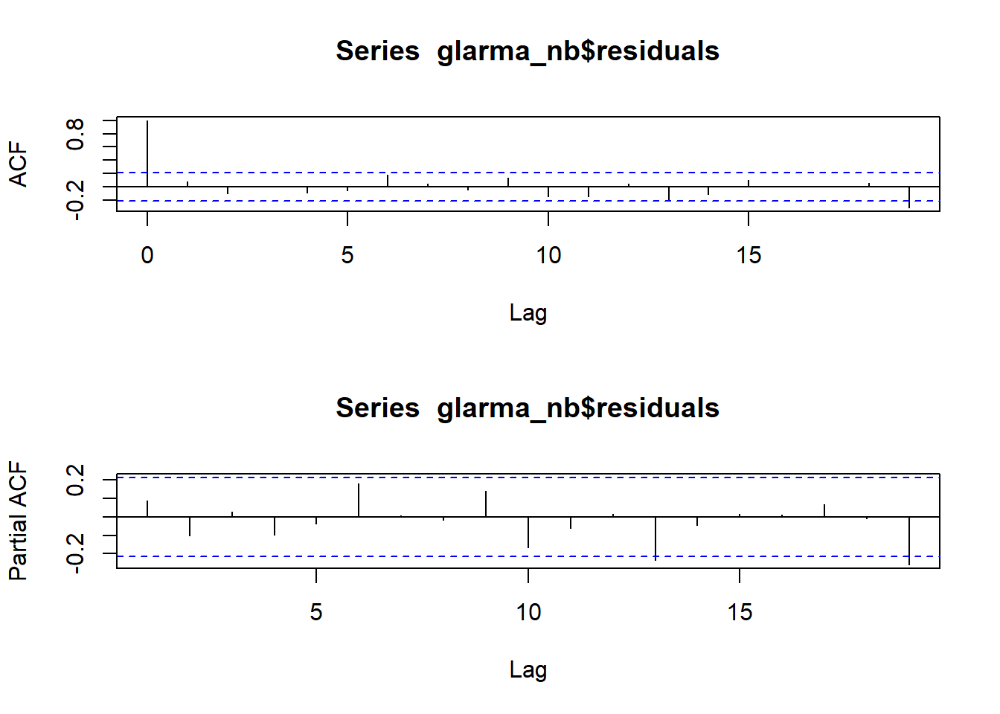

require(glarma)
require(performance)
require(kableExtra)
require(tidyverse)
require(Hmisc)Relátorio - Indicadores Ambientais e Bronquite Aguda
Pré-requisitos
Bibliotecas
Base de Dados
df <- read.delim("Data_CPDO.txt")Escolhendo as variáveis preditoras
Correlação
poluentes <- df[, 1:9]
matrix <- rcorr(as.matrix(poluentes))
cor_matrix <- matrix$r
p_value_matrix <- matrix$P
cor_matrix[lower.tri(cor_matrix, diag = TRUE)] <- ""
p_value_matrix[lower.tri(p_value_matrix, diag = TRUE)] <- ""Usando a função rcorr do pacote Hmisc, é possivel criar uma tabela de correlação entre a variável resposta (bronquite aguda) e as variáveis preditoras (poluentes).
| bronq_aguda | CO | PM10 | NO | NO2 | NOX | O3 | Temp_min | RH | |
|---|---|---|---|---|---|---|---|---|---|
| bronq_aguda | 0.0323432810141658 | 0.0756939563571763 | 0.297721005846306 | -0.0271288307911392 | 0.18245089799302 | -0.348436360834819 | -0.147503841432864 | 0.109359895741852 | |
| CO | 0.150395505169633 | 0.102595870518991 | 0.153471436405583 | 0.141098015100781 | 0.0705832464671625 | -0.129452742871646 | 0.116940892551031 | ||
| PM10 | 0.470265202892027 | 0.294727543313694 | 0.449074960064434 | 0.366315194645902 | -0.444210236387916 | -0.520590928460985 | |||
| NO | 0.518064025162367 | 0.909032460101456 | -0.186500223569621 | -0.484465479347949 | -0.184498031508502 | ||||
| NO2 | 0.826639563204768 | 0.239468345698813 | -0.205333770787192 | -0.249814235591937 | |||||
| NOX | -0.0126237025596161 | -0.410682660455583 | -0.238506628340795 | ||||||
| O3 | -0.0416076775561365 | -0.56800320581987 | |||||||
| Temp_min | 0.479085422929526 | ||||||||
| RH |
A matrix apresenta as correlações entre diferentes variáveis ambientais e de saúde, com foco na relação com a bronquite aguda. Os coeficientes de correlação variam de -1 a 1, indicando a força e a direção da relação entre duas variáveis.
- A bronquite aguda está positivamente correlacionada com poluentes como \(\text{NO}\) e \(\text{NOX}\), o que reforça a ligação entre poluição atmosférica e problemas respiratórios.
- Níveis de \(\text{O3}\) têm uma correlação negativa com bronquite aguda, indicando que pode haver um efeito protetor em certos contextos.
- A umidade relativa apresenta relação moderada com poluentes e saúde, possivelmente modulando a dispersão de partículas no ar.
Valor-p
| bronq_aguda | CO | PM10 | NO | NO2 | NOX | O3 | Temp_min | RH | |
|---|---|---|---|---|---|---|---|---|---|
| bronq_aguda | 0.770236313565127 | 0.493764095978874 | 0.0059515516139339 | 0.806487924104706 | 0.0966916248868777 | 0.00116199965294816 | 0.18057863922756 | 0.322049180669552 | |
| CO | 0.172088198793251 | 0.353059677829768 | 0.16338248838001 | 0.20046661153902 | 0.523467526006617 | 0.240546364305547 | 0.289435253017851 | ||
| PM10 | 6.37303131445499e-06 | 0.00649902949122572 | 1.82972428215411e-05 | 0.000610362604302583 | 2.30840805004462e-05 | 3.85227497901042e-07 | |||
| NO | 4.48394607666103e-07 | 0 | 0.0893891178586657 | 3.01917433187526e-06 | 0.092943393326975 | ||||
| NO2 | 0 | 0.0282422382101319 | 0.0609669139552675 | 0.0219204252375538 | |||||
| NOX | 0.909262320520265 | 0.000104361487907489 | 0.0289012973958713 | ||||||
| O3 | 0.707073384795892 | 1.74993681767432e-08 | |||||||
| Temp_min | 4.02276326205708e-06 | ||||||||
| RH |
A matriz de valores-p foi utilizada para avaliar a significância estatística das correlações observadas anteriormente. Valores-p menores que 0,05 indicam uma relação estatisticamente significativa, enquanto valores maiores sugerem que a correlação pode ser atribuída ao acaso.
As relações entre \(\text{NO}\) e bronquite aguda (\(\text{p = 0,0059}\)) e entre \(\text{O3}\) e bronquite aguda ( \(\text{p = 0,0012}\)) são as mais significativas.
Poluentes como \(\text{PM10}\) e \(\text{NO}\) mostram forte interação com variáveis ambientais como umidade e temperatura, mas nem todas têm impacto direto na saúde com significância estatística.
Embora várias variáveis tenham correlações aparentes com a bronquite aguda, apenas algumas relações são estatisticamente robustas.
A relação entre \(\text{umidade relativa}\) e poluentes como \(\text{PM10}\) é estatisticamente significativa e pode influenciar a dispersão de partículas no ar.
Ajustes
NO (Óxido de Nitrogenio) como variável preditora
y <- df[,1]
X1 <- as.matrix(df[,4])
Trend <- 1:84
Intercepto <- rep(1,84)
X1 <- cbind(Intercepto, Trend, X1, df$cos6, df$cos12, df$sen6, df$sen12)
colnames(X1) <- c("Intercepto", "Trend", "NO", "cos6", "cos12", "sen6", "sen12")GLARMA Binomial Negativo
glarma_nb <- glarma(y, X1, thetaLags = NULL, phiLags = 1, type = "NegBin",
method = "FS", residuals= "Pearson",
maxit = 100, grad = 1e-6)
summary(glarma_nb)
Call: glarma(y = y, X = X1, type = "NegBin", method = "FS", residuals = "Pearson",
phiLags = 1, thetaLags = NULL, maxit = 100, grad = 1e-06)
Pearson Residuals:
Min 1Q Median 3Q Max
-2.4856 -0.8947 -0.1203 0.5752 4.0168
Negative Binomial Parameter:
Estimate Std.Error z-ratio Pr(>|z|)
alpha 14.813 3.786 3.912 9.15e-05 ***
GLARMA Coefficients:
Estimate Std.Error z-ratio Pr(>|z|)
phi_1 0.22406 0.03985 5.623 1.88e-08 ***
Linear Model Coefficients:
Estimate Std.Error z-ratio Pr(>|z|)
Intercepto 3.180309 0.121089 26.264 < 2e-16 ***
Trend 0.008510 0.001942 4.382 1.18e-05 ***
NO 0.019641 0.006340 3.098 0.00195 **
cos6 -0.065614 0.060498 -1.085 0.27812
cos12 -0.454707 0.073249 -6.208 5.38e-10 ***
sen6 -0.315997 0.056916 -5.552 2.82e-08 ***
sen12 0.466171 0.063349 7.359 1.86e-13 ***
Null deviance: 361.607 on 83 degrees of freedom
Residual deviance: 98.288 on 75 degrees of freedom
AIC: 687.9201
Number of Fisher Scoring iterations: 100
LRT and Wald Test:
Alternative hypothesis: model is a GLARMA process
Null hypothesis: model is a GLM with the same regression structure
Statistic p-value
LR Test 25.22 5.11e-07 ***
Wald Test 31.62 1.88e-08 ***
---
Signif. codes: 0 '***' 0.001 '**' 0.01 '*' 0.05 '.' 0.1 ' ' 1O modelo GLARMA com distribuição Binomial Negativa foi ajustado para capturar as características estruturais e temporais dos dados de contagem analisados. Os resultados indicam que o modelo é estatisticamente robusto e apropriado para os dados, conforme evidenciado pelos seguintes pontos principais:
Adequação do modelo Binomial Negativa:
O parâmetro de dispersão (\(\alpha = 14.813\), \(p < 0.001\)) demonstra que os dados apresentam superdispersão significativa, justificando a escolha da distribuição Binomial Negativa em vez da Poisson.Dependência temporal:
O coeficiente (\(\phi_1= 0.22406\), \(p < 0.001\)) confirma a presença de dependência temporal nos dados, com eventos passados influenciando os valores futuros. Isso valida a necessidade do componente autorregressivo do modelo GLARMA.Impacto das variáveis explicativas:
- A tendência (\(\text{Trend} = 0.00851\) , \(p < 0.001\)) indica um aumento consistente na contagem esperada ao longo do tempo.
- A variável (\(\text{NO} = 0.01964\), \(p = 0.00195\) ) tem um impacto positivo significativo, aumentando a contagem esperada.
- Os componentes sazonais (\(\cos(12)\), \(\sin(6)\) e \(\sin(12)\) são altamente significativos, confirmando a presença de padrões sazonais nos dados.
Qualidade do ajuste:
O modelo apresenta uma redução substancial na deviance residual (98.288) em relação à deviance nula (361.607), indicando que ele explica bem os dados. Além disso, o menor AIC (687.92) em comparação ao modelo Poisson sugere que o modelo Binomial Negativa é mais adequado para capturar a variabilidade nos dados.Validação do modelo GLARMA:
Os testes de razão de verossimilhança (LRT) e de Wald (\(p < 0.001\)) indicam que o modelo GLARMA é significativamente superior a um modelo GLM simples com a mesma estrutura de regressão.
O modelo GLARMA com Binomial Negativa ajustou adequadamente os dados, capturando tanto a superdispersão quanto a dependência temporal. As variáveis sazonais e a tendência mostraram-se fatores determinantes para explicar a variabilidade nas contagens, reforçando a relevância do modelo para a análise dos dados. A ausência de correlações nos resíduos sugere que as estruturas remanescentes foram bem modeladas, tornando o modelo adequado para interpretações e previsões confiáveis.
par(mfrow = c(2, 1))
acf(glarma_nb$residuals)
pacf(glarma_nb$residuals)
Os gráficos de ACF e PACF dos resíduos do modelo GLARMA mostram que as autocorrelações estão dentro das bandas de confiança. Isso indica que os resíduos não apresentam correlação significativa entre os atrasos e se comportam como um ruído branco. Portanto, podemos concluir que o modelo capturou adequadamente as dependências temporais e estruturais presentes nos dados.
par(mfrow=c(2,3))
plot(glarma_nb)
Com base nos resultados apresentados, podemos avaliar a adequação do modelo GLARMA aos dados observados:
Aderência aos Dados Observados: O modelo ajustado utilizando GLARMA demonstrou ser eficaz ao reproduzir os padrões temporais das contagens observadas. Isso foi confirmado pela similaridade entre as linhas representando os valores observados (preta) e ajustados (vermelha). O desempenho foi consistentemente superior ao obtido com valores fixos (linha azul), validando a capacidade do modelo de capturar a dinâmica dos dados.
Resíduos de Pearson: A inspeção dos resíduos de Pearson revelou a ausência de tendências ou sazonalidades claras, sugerindo que o modelo explicou bem a variabilidade dos dados sem introduzir vieses sistemáticos.
Distribuição do PIT: Apesar de o histograma do Probability Integral Transform (PIT) não apresentar uma uniformidade ideal, não foram detectados padrões críticos que comprometessem a validade do modelo. Isso indica que o ajuste está suficientemente adequado para descrever os dados.
Distribuição e Normalidade dos Resíduos Randomizados: O histograma dos resíduos randomizados apresentou desvios em relação à normalidade ideal, mas o Q-Q Plot indicou que, em geral, os resíduos seguem uma distribuição aproximadamente normal, sem desvios graves. Embora haja espaço para melhorias, os resultados são aceitáveis.
Dependência Temporal: A análise da função de autocorrelação (ACF) dos resíduos randomizados mostrou valores dentro dos intervalos de confiança, confirmando que o modelo capturou de forma satisfatória a dependência temporal dos dados.
De forma geral, o modelo GLARMA demonstrou boa adequação aos dados analisados, apesar de algumas limitações observadas, como os desvios nos resíduos randomizados. Recomenda-se uma análise mais aprofundada desses pontos e, se necessário, ajustes no modelo ou a inclusão de variáveis adicionais. Ainda assim, o modelo atual é confiável e robusto para atender aos objetivos de interpretação e predição propostos.
NOX (Óxidos de Nitrogênio) como variável preditora
y <- df[,1]
X2 <- as.matrix(df[,6])
Trend <- 1:84
Intercepto <- rep(1,84)
X2 <- cbind(Intercepto, Trend, X2, df$cos6, df$cos12, df$sen6, df$sen12)
colnames(X2) <- c("Intercepto", "Trend", "NOX", "cos6", "cos12", "sen6", "sen12")GLARMA Binomial Negativo
glarma_nb <- glarma(y, X2, thetaLags = NULL, phiLags = 1, type = "NegBin",
method = "FS", residuals= "Pearson",
maxit = 100, grad = 1e-6)
summary(glarma_nb)
Call: glarma(y = y, X = X2, type = "NegBin", method = "FS", residuals = "Pearson",
phiLags = 1, thetaLags = NULL, maxit = 100, grad = 1e-06)
Pearson Residuals:
Min 1Q Median 3Q Max
-2.4871 -0.9015 -0.0022 0.4446 3.8532
Negative Binomial Parameter:
Estimate Std.Error z-ratio Pr(>|z|)
alpha 14.990 3.509 4.272 1.94e-05 ***
GLARMA Coefficients:
Estimate Std.Error z-ratio Pr(>|z|)
phi_1 0.22132 0.04094 5.407 6.42e-08 ***
Linear Model Coefficients:
Estimate Std.Error z-ratio Pr(>|z|)
Intercepto 3.079970 0.140890 21.861 < 2e-16 ***
Trend 0.008068 0.002014 4.006 6.17e-05 ***
NOX 0.012800 0.003681 3.478 0.000506 ***
cos6 -0.052588 0.061898 -0.850 0.395549
cos12 -0.475997 0.073854 -6.445 1.16e-10 ***
sen6 -0.318841 0.057635 -5.532 3.16e-08 ***
sen12 0.500643 0.065389 7.656 1.91e-14 ***
Null deviance: 350.697 on 83 degrees of freedom
Residual deviance: 95.115 on 75 degrees of freedom
AIC: 688.6466
Number of Fisher Scoring iterations: 100
LRT and Wald Test:
Alternative hypothesis: model is a GLARMA process
Null hypothesis: model is a GLM with the same regression structure
Statistic p-value
LR Test 27.21 1.82e-07 ***
Wald Test 29.23 6.42e-08 ***
---
Signif. codes: 0 '***' 0.001 '**' 0.01 '*' 0.05 '.' 0.1 ' ' 1O modelo GLARMA com distribuição Binomial Negativa foi ajustado para examinar os dados de contagem, considerando tanto a superdispersão quanto a dependência temporal. A análise dos resultados revela os seguintes pontos principais:
- Adequação do modelo Binomial Negativa:
- O parâmetro de dispersão \(\alpha = 14.813\) (p-valor \(< 0.001\)) indica que os dados apresentam superdispersão significativa, o que justifica a escolha da distribuição Binomial Negativa em vez da Poisson. A alta significância deste parâmetro reforça a presença de variabilidade excessiva nos dados.
- Dependência temporal:
- O coeficiente \(\phi_1 = 0.22406\) (p-valor \(< 0.001\)) é significativamente positivo, sugerindo que há uma dependência temporal entre os valores, ou seja, os valores passados influenciam os valores futuros, o que é característico de um modelo GLARMA.
- Impacto das variáveis explicativas:
- Intercepto (3.1803, \(p < 2e-16\)): O valor do intercepto é altamente significativo, indicando o nível de contagem esperado quando todas as outras variáveis independentes são zero.
- Trend (0.00851, \(p = 1.18e-05\)): A variável de tendência é significativa e sugere que a contagem esperada aumenta de forma constante ao longo do tempo.
- NO (0.01964, \(p = 0.00195\)): A variável \(\text{NO}\) tem um impacto positivo significativo na contagem esperada, aumentando-a em aproximadamente 1.98% por unidade de aumento em \(\text{NO}\).
- cos6 (-0.0656, \(p = 0.278\)): A variável \(\cos(6)\) não apresenta significância estatística, sugerindo que o padrão sazonal com período de 6 unidades não afeta de forma relevante a contagem.
- cos12 (-0.4547, \(p < 2e-16\)): A variável \(\cos(12)\) apresenta um impacto significativo, indicando que o padrão sazonal com período de 12 unidades reduz a contagem esperada.
- sen6 (-0.3160, \(p = 2.82e-08\)) e sen12 (0.4662, \(p = 1.86e-13\)): Ambas as variáveis sazonais são altamente significativas. O termo \(\sin(6)\) reduz a contagem esperada, enquanto \(\sin(12)\) a aumenta, sugerindo efeitos sazonais opostos.
- Qualidade do ajuste:
- A deviance nula (361.607) e a deviance residual (98.288) indicam que o modelo conseguiu explicar uma parte substancial da variabilidade nos dados. A diferença significativa entre essas duas deviance sugere um bom ajuste.
- O AIC = 687.92 é comparativamente baixo, indicando que o modelo Binomial Negativa se ajusta bem aos dados em relação a alternativas mais simples, como o modelo Poisson.
- Validação do modelo GLARMA:
- O teste de razão de verossimilhança (LRT) e o teste de Wald (ambos com p-valores \(< 0.001\)) demonstram que o modelo GLARMA é significativamente superior a um modelo GLM simples com a mesma estrutura de regressão, justificando a escolha do modelo GLARMA para capturar a dependência temporal nos dados.
O modelo GLARMA com Binomial Negativa apresentou um bom ajuste aos dados, com a identificação de superdispersão e dependência temporal significativa. As variáveis explicativas, como a tendência, \(\text{NOX}\), e os componentes sazonais, desempenham papéis cruciais na explicação da variabilidade nas contagens. A presença de uma dependência temporal significativa foi confirmada pelo coeficiente \(\phi_1\). A ausência de correlação nos resíduos e os bons resultados nos testes de validação indicam que o modelo é robusto e adequado para análise e previsão dos dados.
par(mfrow = c(2, 1))
acf(glarma_nb$residuals)
pacf(glarma_nb$residuals)
Os gráficos de ACF e PACF dos resíduos do modelo GLARMA mostram que as autocorrelações estão dentro das bandas de confiança. Isso indica que os resíduos não apresentam correlação significativa entre os atrasos e se comportam como um ruído branco. Portanto, podemos concluir que o modelo capturou adequadamente as dependências temporais e estruturais presentes nos dados.
par(mfrow=c(2,3))
plot(glarma_nb)
Com base nos resultados apresentados, podemos avaliar a adequação do modelo GLARMA aos dados observados:
Aderência aos Dados Observados: O modelo ajustado pelo GLARMA mostrou-se eficiente ao capturar o padrão temporal das contagens observadas, conforme evidenciado pela boa concordância entre as linhas preta (observada) e vermelha (ajustada). O desempenho foi consistentemente superior aos valores fixos (linha azul), reforçando a validade do modelo.
Resíduos de Pearson: A análise dos resíduos de Pearson indicou ausência de padrões evidentes (como tendências ou sazonalidades), sugerindo que o modelo foi capaz de explicar bem a variabilidade dos dados sem viés sistemático.
Distribuição do PIT: O histograma do Probability Integral Transform (PIT) não apresentou uniformidade perfeita, mas também não revelou padrões preocupantes, indicando que o modelo pode estar suficientemente ajustado para descrever os dados.
Distribuição e Normalidade dos Resíduos Randomizados: Apesar de o histograma dos resíduos randomizados mostrar desvios em relação a uma distribuição normal ideal, o Q-Q Plot sugeriu que os resíduos estão aproximadamente normais, sem desvios severos. Esses resultados sugerem que o modelo é aceitável, embora melhorias possam ser exploradas.
Dependência Temporal: A análise da autocorrelação (ACF) dos resíduos randomizados revelou que os valores estão dentro dos intervalos de confiança, indicando que o modelo capturou adequadamente a estrutura de dependência temporal dos dados.
Embora os resultados gerais apontem para um bom ajuste do modelo GLARMA, algumas limitações foram observadas, como os desvios na distribuição dos resíduos randomizados. Recomenda-se uma investigação mais detalhada desses aspectos, considerando a possibilidade de refinar o modelo ou explorar variáveis adicionais para melhorar o ajuste.
No entanto, considerando os objetivos propostos e as análises realizadas, o modelo atual pode ser considerado robusto para a interpretação e predição dos dados analisados.
NO e NOX como variáveis preditoras
y <- df[,1]
X1 <- as.matrix(df[,4])
X2 <- as.matrix(df[,7])
Trend <- 1:84
Intercepto <- rep(1,84)
X3 <- cbind(Intercepto, Trend, X1, X2, df$cos6, df$cos12, df$sen6, df$sen12)
colnames(X3) <- c("Intercepto", "Trend", "NO", "O3", "cos6", "cos12", "sen6", "sen12")GLARMA Binomial Negativo
glarma_nb <- glarma(y, X3, thetaLags = NULL, phiLags = c(3,12), type = "NegBin",
method = "FS", residuals= "Pearson",
maxit = 100, grad = 1e-6)summary(glarma_nb)
Call: glarma(y = y, X = X3, type = "NegBin", method = "FS", residuals = "Pearson",
phiLags = c(3, 12), thetaLags = NULL, maxit = 100, grad = 1e-06)
Pearson Residuals:
Min 1Q Median 3Q Max
-1.6391 -0.8543 -0.0158 0.9772 3.6886
Negative Binomial Parameter:
Estimate Std.Error z-ratio Pr(>|z|)
alpha 8.908 2.911 3.06 0.00221 **
GLARMA Coefficients:
Estimate Std.Error z-ratio Pr(>|z|)
phi_3 -0.02492 0.03338 -0.747 0.4552
phi_12 -0.06751 0.03447 -1.959 0.0502 .
Linear Model Coefficients:
Estimate Std.Error z-ratio Pr(>|z|)
Intercepto 3.409108 0.189199 18.019 < 2e-16 ***
Trend 0.007727 0.001413 5.468 4.54e-08 ***
NO 0.027952 0.009071 3.082 0.00206 **
O3 -0.020023 0.010468 -1.913 0.05576 .
cos6 -0.185255 0.059546 -3.111 0.00186 **
cos12 -0.385247 0.059535 -6.471 9.74e-11 ***
sen6 -0.377309 0.057725 -6.536 6.30e-11 ***
sen12 0.410284 0.066029 6.214 5.18e-10 ***
Null deviance: 363.88 on 83 degrees of freedom
Residual deviance: 106.41 on 73 degrees of freedom
AIC: 720.2555
Number of Fisher Scoring iterations: 100
LRT and Wald Test:
Alternative hypothesis: model is a GLARMA process
Null hypothesis: model is a GLM with the same regression structure
Statistic p-value
LR Test -3.767 1.0000
Wald Test 4.783 0.0915 .
---
Signif. codes: 0 '***' 0.001 '**' 0.01 '*' 0.05 '.' 0.1 ' ' 1Como o NO e o NOX tem alta correlação, o ajuste do modelo usando as duas variáveis é inviavél.
par(mfrow = c(2, 1))
acf(glarma_nb$residuals)
pacf(glarma_nb$residuals)
par(mfrow=c(2,3))
plot(glarma_nb)